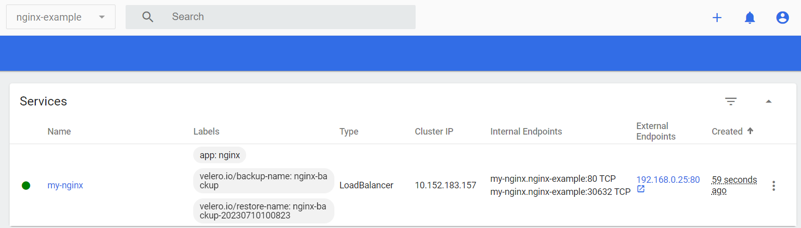

Velero

參考資料： - Velero 初探與實踐 https://kaichu.io/posts/velero-research-practice/ - 官網 https://velero.io/docs/v1.11/how-velero-works/ - 使用 Velero 備份還原 Kubernetes 集羣 https://www.readfog.com/a/1647215683490123776 - Quick start evaluation install with Minio https://velero.io/docs/main/contributions/minio - k8s1.24 使用Velero 備份還原Rancher Longhorn上volume資料 https://www.itnotetk.com/2022/11/28/k8s1-24-velero-%e5%82%99%e4%bb%bd%e9%82%84%e5%8e%9f-rancher-longhorn%e4%b8%8avolume%e8%b3%87%e6%96%99/
運作方式

- Velero 的基本操作就是 CLI 會去操作 Kubernetes API 建立 Backup 物件
- BackupController 偵測到新的 Backup 物件並檢查
- 檢查通過後就會操作 Kubernetes API Server 進行資料的備份
- BackupController 就會透過 Plugin 會操作對應用 Object Storage Service 上傳檔案
- 如果 Provider 支援原生的快照操作, Plugin 就可以透過 API 備分永久磁碟區
安裝
下載及解壓縮
wget https://github.com/vmware-tanzu/velero/releases/download/v1.11.0/velero-v1.11.0-linux-amd64.tar.gz
tar -zxvf velero-v1.11.0-linux-amd64.tar.gz && cd velero-v1.11.0-linux-amd64
安裝MINIO
要將 examples/minio/00-minio-deployment.yaml 修改成以下
# Copyright 2017 the Velero contributors.
#
# Licensed under the Apache License, Version 2.0 (the "License");
# you may not use this file except in compliance with the License.
# You may obtain a copy of the License at
#
# http://www.apache.org/licenses/LICENSE-2.0
#
# Unless required by applicable law or agreed to in writing, software
# distributed under the License is distributed on an "AS IS" BASIS,
# WITHOUT WARRANTIES OR CONDITIONS OF ANY KIND, either express or implied.
# See the License for the specific language governing permissions and
# limitations under the License.
---
apiVersion: v1
kind: Namespace
metadata:
name: velero
---
apiVersion: apps/v1
kind: Deployment
metadata:
namespace: velero
name: minio
labels:
component: minio
spec:
strategy:
type: Recreate
selector:
matchLabels:
component: minio
template:
metadata:
labels:
component: minio
spec:
volumes:
- name: storage
emptyDir: {}
- name: config
emptyDir: {}
containers:
- name: minio
image: minio/minio:latest
imagePullPolicy: IfNotPresent
args:
- server
- /storage
- --config-dir=/config
- --console-address=:9001
env:
- name: MINIO_ACCESS_KEY
value: "minio"
- name: MINIO_SECRET_KEY
value: "minio123"
ports:
- containerPort: 9000
- containerPort: 9001
volumeMounts:
- name: storage
mountPath: "/storage"
- name: config
mountPath: "/config"
---
apiVersion: v1
kind: Service
metadata:
namespace: velero
name: minio
labels:
component: minio
spec:
type: NodePort
ports:
- name: api
port: 9000
targetPort: 9000
- name: console
port: 9001
targetPort: 9001
selector:
component: minio
---
apiVersion: batch/v1
kind: Job
metadata:
namespace: velero
name: minio-setup
labels:
component: minio
spec:
template:
metadata:
name: minio-setup
spec:
restartPolicy: OnFailure
volumes:
- name: config
emptyDir: {}
containers:
- name: mc
image: minio/mc:latest
imagePullPolicy: IfNotPresent
command:
- /bin/sh
- -c
- "mc --config-dir=/config config host add velero http://minio:9000 minio minio123 && mc --config-dir=/config mb -p velero/velero"
volumeMounts:
- name: config
mountPath: "/config"
kubectl apply -f examples/minio/00-minio-deployment.yaml
開啟 kubrnetes dashboard 看 velero minio 是哪個 Port，並開啟瀏覽器

http://192.168.0.17:32729/browser
帳號/密碼：minio/minio123
P.S.：
當然如果需要在不同 Kubernetes 和存儲池集羣備份與恢復數據，需要將 minio 服務端安裝在 Kubernetes 集羣外，保證在集羣發生災難性故障時，不會對備份數據產生影響，可以通過二進制的方式進行安裝。
(略) 請參考 https://www.readfog.com/a/1647215683490123776 安裝 MINIO
安裝 velero 服務端
nano credentials-velero
# 秘钥文件credentials-velero
[default]
aws_access_key_id = minio
aws_secret_access_key = minio123
velero install
velero install \
--provider aws \
--bucket velero \
--plugins velero/velero-plugin-for-aws:latest \
--plugins openebs/velero-plugin:ci \
--secret-file ./credentials-velero \
--use-volume-snapshots=false \
--backup-location-config region=minio,s3ForcePathStyle="true",s3Url=http://minio.velero.svc.cluster.local:9000
PS：s3Url=http://192.168.0.17:31883 PROT 從哪裡取得？
minio.velero:30050 TCP --> MiniO 的 URL

minio.velero:31883 TCP --> MiniO 的 Dashboard URL
http://192.168.0.17:30050/

Back up
先建立一個 Namespace / Development / Service
cd ~/velero-v1.11.0-linux-amd64
kubectl apply -f examples/nginx-app/base.yaml
Create a backup for any object that matches the app=nginx label selector:
velero backup create nginx-backup --selector app=nginx

Run velero backup describe nginx-backup or velero backup logs nginx-backup for more details.
這時候去看 MiniO 的 Dashboard，會看到備份的檔案在這。

Simulate a disaster kubectl delete namespace nginx-example
To check that the nginx deployment and service are gone, run:
kubectl get deployments --namespace=nginx-example
kubectl get services --namespace=nginx-example
kubectl get namespace/nginx-example
Restore
velero restore create --from-backup nginx-backup
Restore request "nginx-backup-20230710100823" submitted successfully.
Run velero restore describe nginx-backup-20230710100823 or velero restore logs nginx-backup-20230710100823 for more details.
# 看進度
velero restore get

nginx-example 就回來了~

Clean up
velero backup delete BACKUP_NAME
velero uninstall --> 全部移除
With PV
範例1 cd ~/velero-v1.11.0-linux-amd64 kubectl apply -f examples/nginx-app/with-pv.yaml
kubectl -n nginx-example annotate pod/nginx-deployment-78964c9995-cx4qs backup.velero.io/backup-volumes=nginx-logs
velero backup create nginx-backup --include-namespaces nginx-example --default-volumes-to-fs-backup --snapshot-volumes --ttl 180h
velero backup create nginx-backup --include-namespaces nginx-example --default-volumes-to-fs-backup
範例2
請參考 nfs 的 MySQL + NFS 建立相關環境與pod
kubectl exec -it mysql-5b46fb64b4-t2m4c -n kube-demo -- /bin/bash
並且建立一個新的資料庫，作為測試用
備份
velero backup create mysql-backup --include-namespaces kube-demo --default-volumes-to-restic
velero backup describe mysql-backup
minio 會有備份資料

模擬災難
kubectl delete namespace kube-demo
復原
velero restore create --from-backup mysql-backup
velero restore get
檢查資料有否還原 kubectl exec -it mysql-5b46fb64b4-zj7n2 -n kube-demo -- /bin/bash